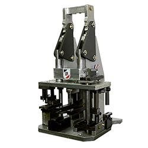
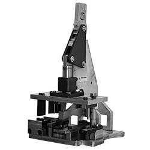
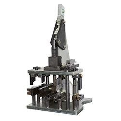
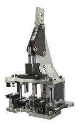

Cód. 100006Precio a consultar

Punzonadora manual
Ventanas corredizas Modena a 45º con cierre lateral, sin desagotes.
 Representante oficial OKFabricación nacional, repuestos originales
Representante oficial OKFabricación nacional, repuestos originalesDatos tomados de los manuales y folletos del fabricante. Pueden cambiar sin aviso: confirmalos al pedir la cotización.



Ventanas de abrir, de rebatir, oscilobatientes, puertas y paños fijos Modena a 45º.